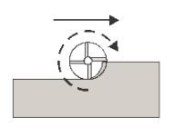

Fraisage en opposition
Fraisage en avalant
Précise si la matière doit être enlevée en effectuant un fraisage en avalant, en opposition ou en bi-directionnelle.
|
 |
Fraisage en opposition |
Fraisage en avalant |
Comparaison du fraisage en avalant et du fraisage en opposition
Les outils de fraisage progressent de sorte que les dents de coupe entament la matière en tournant du niveau d'épaisseur maximale vers le niveau zéro. Cette opération est appelée fraisage en avalant.
Si l'opération est effectuée dans la direction opposée, l'outil "creuse" la matière, allant du niveau d'épaisseur zéro vers le niveau d'épaisseur maximale. Cette technique est appelée fraisage en opposition.
Le fraisage en opposition est souvent utilisé sur les machines manuelles car l'entredent des vis-mères de ces machines entraîne un mouvement brusque de l'outil si la méthode avalante est utilisée. Les machines CNC ne rencontrent pas ce problème, car elles utilisent des vis à billes.
Le fraisage en opposition provoque un frottement de l'outil contre la surface de coupe, ce qui entraîne un durcissement de la matière, crée des surchauffes et augmente l'usure de l'outil. La présence de copeaux à la surface réduit également la qualité de la finition.
Sauf recommandation contraire du fabricant de l'outil pour la matière à fraiser, utilisez toujours le fraisage en avalant sur une machine CNC. Cette technique génère beaucoup moins d'effort et de chaleur lors de la coupe, offre une meilleure finition de surface et accroît la durée de vie de l'outil.
REMARQUE: lorsque vous travaillez avec des matières fragiles, comme des matériaux acryliques, le fraisage en avalant permet aussi d'éviter que le matériau n'éclate le long des arêtes.